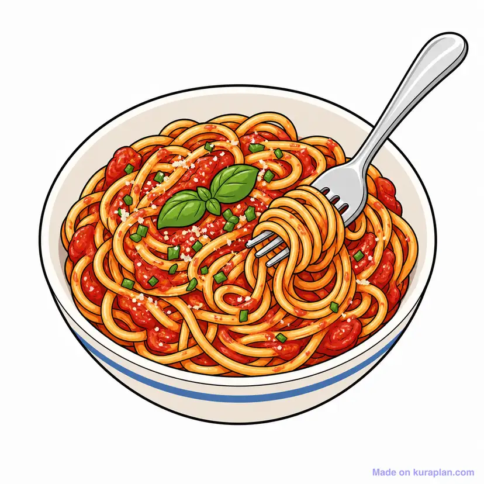

Classic Vegetarian Spaghetti with Basil and Parmesan

Description
A simple, vegetarian Italian classic — spaghetti tossed in a
fresh tomato sauce with garlic, finished with fragrant basil
and shaved parmesan. Light, bright, and comforting, with
no meat involved.
Serves:4 Prep time:10 minutes
Cook time:25 minutes
Ingredients
- 400 g (14 oz) spaghetti
- 800 g (28 oz) canned whole peeled tomatoes
- 4 garlic cloves, minced
- 4 tbsp extra virgin olive oil
- 1 cup fresh basil leaves
- 3/4 cup parmesan cheese, grated
- 1 tsp salt
- 1/2 tsp black pepper
- 1/4 tsp red pepper flakes (optional)
- 1/2 tsp sugar (to balance acidity)
Instructions
- Boil the pasta water. Bring a large pot of generously
salted water to a boil.
- Cook the spaghetti. Add the spaghetti to the boiling water
and cook until al dente, according to package directions
(about 9 minutes). Reserve 1 cup of pasta water
before draining.
- Sauté the garlic.While the pasta cooks,
heat the olive oil in a large skillet over medium heat.
Add the minced garlic and cook until fragrant, about
30–60 seconds — don't let it brown.
- Build the sauce.Crush the canned tomatoes
by hand or with a spoon and add them to the skillet.
Stir in the salt, pepper, red pepper flakes, and sugar.
Simmer, stirring occasionally, until slightly thickened
(about 15 minutes).
- Combine pasta and sauce.Add the drained
spaghetti directly into the skillet with the sauce.
Toss well, adding a splash of reserved pasta water
if needed to loosen the sauce and help it cling
to the noodles.
- Finish with basil and parmesan.Tear the
basil leaves and stir most of them through the pasta.
Plate, then top with grated parmesan and the remaining
basil.
Notes
For a smoother sauce, blend the tomatoes before adding them.
Fresh basil is best added at the end to preserve its aroma
— cooking it too long dulls the flavor. Use good-quality
olive oil, since it plays a starring role in this simple
sauce.